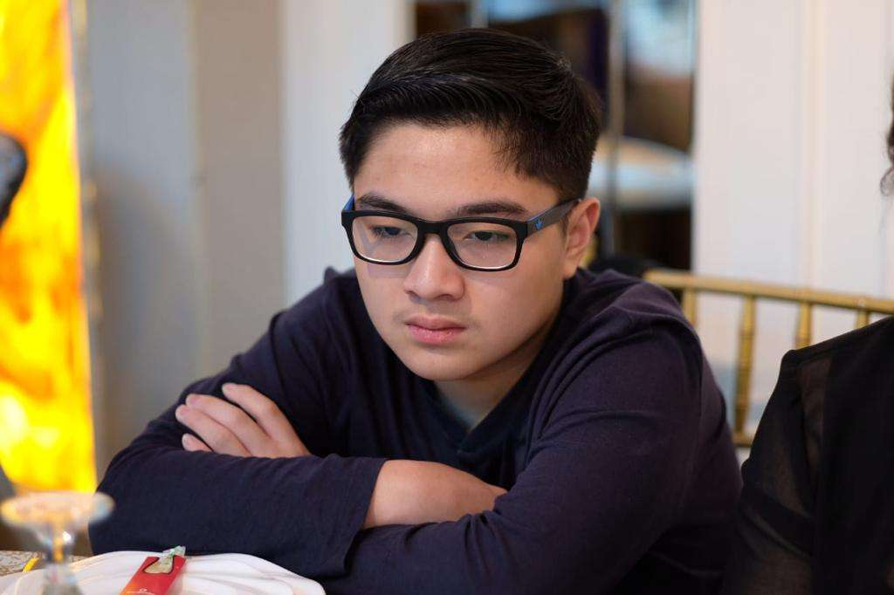

BIOGRAPHY
“The biggest risk is not taking any risk"
WMark Zuckerberg merupakan pencipta social-networking website Facebook yang telah putus sekolah dari Universitas Harvard. Ketika Zuckerberg memasuki sekolah menengah di Phillips Exeter Academy, ia bertemu dengan temannya yaitu D’Angelo. Karena keduanya memiliki ketertarikan yang sama terhadap komputer, membuatnya berencana menciptakan sebuah program. Hal itu membawa kabar baik, pada tahun terakhirnya di Philips, Zuckerberg direkrut oleh Microsoft dan American Online untuk mengerjakan suatu proyek. Kecerdasan Zuckerberg membawanya kesempatan untuk berkuliah di Harvard dengan jurusan ilmu komputer dan psikologi. Setiap kali Zuckerberg mengajukan diri untuk membuat direktori tersebut, ia selalu ditolak oleh pihak Harvard karena alasan tertentu. Walaupun saat itu ditolak, Zuckerberg nggak pantang menyerah, ia diam-diam berhasil membuat CourseMatch,
yaitu platform yang memudahkan orang-orang untuk berinteraksi.
Co-Founder

Di tahun kedua masalah kecil pun muncul, Zuckerberg dianggap mencuri karena memasukan data mahasiswa Harvard ke platform Facemash yang ia buat. Perbuatan Mark Zuckerberg memang nggak dibenarkan, tetapi ia justru termotivasi menciptakan platform baru yakni Facebook yang merupakan pengembangan dari Facemash. Seiring berjalannya waktu, Zuckerberg sangat terkejut, ternyata banyak orang yang menyukai platform buatannya. Melihat kesempatan ini, Zuckerberg berencana untuk mengembangkan sistem jaringan yang dibuatnya, inilah bagaimana awal mulanya nama Facebook diciptakan.
Platform Facebook berhasil diciptakan Mark Zuckerberg dan teman-temannya di tahun 2004. Zuckerberg mengutarakan bahwa Facebook adalah jejaring sosial yang bertujuan untuk mempertemukan sesama mahasiswa di Harvard. Kepopuleran Facebook mengakibatkan Zuckerberg jadi kewalahan, ia dan temannya berhasil membuat Facebook menjaring di 30 kampus. Di tahun 2004 akhir, Facebook berhasil menggaet banyak orang, saat itu terdaftar sebanyak 1 juta pengguna dari berbagai kalangan. Keseriusannya dalam mengembangkan Facebook, kali ini Zuckerberg nggak sendiri, ia akan membuat Facebook lebih berkembang bersama teman-temannya. Layaknya proyek yang besar, mereka memilih untuk menyewa sebuah tempat di Palo Alto, California agar lebih fokus.Tetapi disinilah keputusan besar
dimulai, sayangnya Mark Zuckerberg memilih untuk drop out dari Harvard demi fokus dan mengembangkan.
44.942
Partners
ALL OUT OF
Projects Done
1MIL+
Happy Clients
2.9MIL+
Meetings
MOBILITAS SOSIAL
Bentuk Mobilitas Sosial Pembagian bentuk mobilitas sosial didasarkan pada berpengaruh tidaknya hasil perpindahan status sosial yang dialami dengan derajat sosial yang dimiliki. Secara umum bentuk mobilitas sosial terbagi menjadi empat, yaitu vertikal, horizontal, antargenerasi, dan intragenerasi.
1. 1. Vertikal, Mobilitas sosial vertikal terbagi menjadi mobilitas sosial vertikal ke atas dan mobilitas sosial vertikal ke bawah. Dengan kata lain, terjadi perubahan status sosial yang bisa naik atau turun. Mobilitas vertikal ini dengan demikian merupakan perpindahan status sosial yang dipegang oleh seseorang atau kelompok ke status sosial lain yang tidak sama dengan status sebelumnya.
Social climbing dari mark Z : Dari cerita alur mark Zuckerberg ini dapat ditinjau dari segi “social climbing” dimana dari seorang yang dari latar belakang yang biasa dan memiliki mimpi dimana dia bisa sukses dengan apa yang dibuatnya dan menjadi popular saat ini, pada saat dia berani meminjam dana dari donator untuk mengembangkan aplikasi facebooknya karena tanpa server maka programnya yang dibuat oleh Mark untuk membuat compare wajah di kampus Harvard menjadi sering error dan mengakibatkan aplikasi tidak berjalan sesuai dengan yang semestinya. Pada saat mark Z cuma bermimpi jika aplikasi ini akan menjadi besar dan memutuskan melakukan pinjaman, walaupun dia sendiri belum tahu kapan program tersebut bisa menjadi bagus dan begitu berkembang tapi dia memiliki pandangan dimana pada saat itu teknologi internet pasti berkembang dan program yang dikembangkan pasti bisa disukai oleh banyak orang. Dari bentuk ini sesuai dengan teori social climbing bahwa mark yang pertamanya tidak memiliki prestasi di kampus membuat gebrakan baru dengan membuat aplikasi yang bisa digunakan oleh semua orang dan mark berkeyakinan bahwa aplikasi yang dia buat akan menjadi besar dan terbukti dalam waktu 3 bulan aplikasi telah banyak diunduh oleh banyak orang di seluruh dunia. Dan setelah mendapatkan kucuran dana maka Tempat kantor facebook berpindah ke Palo Alto California yang sebelumnya masih di Harvard
Social sinking dari mark z : Dengan seiring berjalannya perkembangan facebook, mark z, dan karena mark sendiri dari latar belakang yang bukan merupakan organisasi dan bertumbuh bersama rekan Eduardo Saverin maka pada saat dia bertumbuh besar dan berkembang dia tidak mampu menghargai teman yang seperjuangan untuk menghasilkan algoritma dari program tersebut. Selain itu mark, juga membuat keputusan dimana dia melepaskan teman Eduardo Saverin yang tidak satu visi dan misi dengan dia, walaupun Eduardo Saverin tersebut yang membantu mark agar bisa terciptanya suatu program yang sekarang lebih banyak dikenal dengan FACEBOOK . Hal ini sesuai dengan definisi social sinking dimana mengalami penurunan derajat dari seseorang yang seharusnya bisa dia capai. Karena Eduardo saverin selepas dari mark, dia mendirikan perusahaan baru yaitu ventura B Capital yang jauh tidak berharga dibandingkan dengan Facebook saat ini.
2. Horizontalnya, perpindahan status sosial yang dialami seseorang atau suatu kelompok tidak akan mengubah derajat sosialnya atau akan tetap sejajar seperti sebelumnya.
Ide pertama kali mendirikan facebook itu adalah ide yang bukan dari original mark sendiri melainkan dari teman kampusnya yaitu Cameron dan tyler winklevoss berserta mitra bisnisnya divya Narendra yang memiliki ide mengenai pertemanan di dunia maya namun mereka belum bias mengimplementasikan dan meminta Mark bergabung dengan mereka, namun mark z mengambil ide tersebut dan mengembangkan nya sendiri bersama Dustin Moskovitz, Chris Hughes dan Eduardo Saverin dan karena kejengkelan dengan teman dan mantan pacarnya yang kurang bersahabat di kampus mulailah dengan aplikasi compare wajah teman yang ada di kampusnya dan hingga aplikasi tersebut ramai di pakai oleh banyak mahasiswa dari beberapa universitas nama aplikasi tersebut adalah FACEMASH.
Dengan hasil ini bisa diliat dengan kesuksesan yang dicapai mark saat ini memang merupakan capain yang luar biasa dimana saat usianya belum menginjak 30 tahun dia sudah termasuk menjadi salah satu milioners yang dikenal seluruh dunia namun mark sampai saat ini tidak pernah melakukan dan menonjolkan status social dia bahkan dia melakukan donasi sebesar 99% dari total pendapatan yang ia miliki.
FAKTOR PENDORONG
“The biggest risk is not taking any risk"
Kemudahan Akses Pendidikan , Semakin tinggi kualitas sistem pendidikan di negara tersebut, semakin besar peluang setiap warga negara untuk mengenyam pendidikan yang layak. Pendidikan adalah alat yang baik untuk setiap orang yang dapat mencapai mobilitas sosial yang lebih besar. Sebaliknya, jika akses pendidikan sedikit, sulit juga untuk mengubah status sosial seseorang ke yang lebih tinggi.
Pada waktu Mark Z di Harvard, Zuckerberg menyabotase data mahasiswa Harvard dan memasukkannya ke dalam website yang ia buat bernama Facemash. Sejumlah foto rekan mahasiswanya terpampang di situ. Tak lupa ia membubuhkan kalimat yang meminta pengunjungnya menentukan mana dari foto-foto ini yang paling “hot”. Pancingannya mengena. Dalam tempo empat jam sejak ia meluncurkan webiste itu tercatat 450 orang mengunjungi Facemash dan sebanyak 22.000 foto mereka buka. Pihak Harvard mengetahuinya dan sambungan internet pun diputus. Zuckerberg diperkarakan karena dianggap mencuri data. Oleh karena itu, dari Faktor pendorongnya itu menunjukkan bahwa Mark Z mulai meningkatkan mobiltas sosialnya dengan Akses equipment yang tersedia di Harvard untuk membuat website & dapat mengembangkan idenya dengan Eduardo Saverin untuk membuat Facebook. Dengan semua fasilitas yang diterima dari Harvard serta akses untuk membuat aplikasi ini dia harus meminta bantuan teman nya Dustin Moskovitz, Chris Hughes serta mencari di dalam perpustakaan Harvard untuk membuat sebuah algoritma yang nantinya bisa digunakan dengan seefisien mungkin oleh penggunanya.
Faktor Individual (Motivasi Individu)
dalam kaitannya dengan kualitas individu dalam hal sikap, pengetahuan dan keterampilan. Seseorang dilahirkan dalam posisi sosial yang sama dengan orang tuanya. Nah, jika seseorang tidak puas dengan status sosial yang diwariskannya, mereka bisa berusaha meraih status sosial yang lebih tinggi. Sampai saat ini, pendidikan dipandang sebagai lift sosial atau sarana yang dapat membuat manusia menjadi individu yang lebih kompeten dan meningkatkan status sosialnya di masyarakat.
Di Harvard inilah Zuckerberg menemukan ide membuat buku direktori mahasiswa online karena universitasnya tak membagikan face book (buku mahasiswa yang memuat foto dan identitas mahasiswa di universitas itu) pada mahasiswa baru sebagai ajang pertemanan di antara mereka. Namun setiap kali ia menawarkan diri membuat direktori itu, Harvard menolaknya. “Mereka mengatakan punya alasan untuk tidak mengumpulkan informasi (mahasiswa) ini,” ujar Zuckerberg kemudian. Meski ditolak ia selalu mencari cara untuk mewujudkannya. “Saya ingin menunjukkan kalau hal itu bisa dilakukan,” lanjutnya soal kengototannya membuat direktori itu. Dari ini Mark Z mempunyai Sikap yang sangat fleksibel, sehingga itu menjadi salah satu kunci kesuksesan Zuckerberg dalam mengembangkan Facebook hingga seperti sekarang. Meski fokus pada tujuan awal untuk menghubungkan banyak orang dengan lebih mudah, Facebook juga dikembangkan dari segi bisnis. Selain factor diatas, Mark sendiri menginginkan untuk melakukan perubahan menjadi lebih besar dengan mencari donator selain dari teman seperjuangannya dia yaitu Eduardo Saverin karena dana dari Eduardo dirasa belum cukup untuk memenuhi perkembangan aplikasi Mark.
SALURAN MOBILITAS
Saluran Mobilitas , mengacu pada sekelompok orang atau organisasi kelembagaan yang berhasil mencapai tujuannya dengan cara yang membawa perubahan dan menciptakan proses mobilitas sosial di masyarakat
Organisasi Keahlian
, Kegiatan organisasi keahlihan dapat menjadi saluran akses mobilitas sosial karena ada orang-orang yang berkumpul dan memiliki profesi yang sama dan berjuang secara bersatu dan kuat untuk profesinya. Contoh organisasi profesi tersebut adalah Persatuan Guru Republik Indonesia (PGRI). Misi PGRI adalah memperjuangkan pendidikan di Indonesia, memperjuangkan hak kesejahteraan guru dan menjadi fasilitator pendidikan di Indonesia.
Jadi Mark Zuckerberg sebelum menciptakan Facebook, dia merekrut teman-teman sekolah dari Harvard yaitu Chris Hughes, Andrew McCollum, Dustin Moskovitz, Eduardo Saverin. Dari ini Mark & anggota para ahlinya mendirikan Facebook di tahun 2004 dengan tujuan untuk menyediakan buku wajah secara online bagi mahasiswa untuk terhubung dan berbagi informasi. Mark Zuckerberg dengan anggota pendiri Facebook menjalankan situs dari kamar asrama di Universitas Harvard hingga Juni 2004. Tahun itu Zuckerberg keluar dari perguruan tinggi dan memindahkan perusahaan ke Palo Alto, California. Pada akhir tahun 2004, Facebook memiliki 1 juta pengguna. Sesuai dengan definisi organisasi keahlihan mark mampu menarik beberapa teman2nya yang memiliki kemampuan untuk membentuk suatu kantor yang memiliki 1 visi dan misi ingin membagikan foto kita ke seluruh dunia.
Lembaga pendidikan
Adalah saluran yang konkret dari mobilitas vertikal ke atas. Bahkan saluran mobilitas sosial ini sering dianggap sebagai social elevator. Maksudnya lembaga pendidikan bisa mengubah seseorang yang semula berkedudukan rendah menjadi lebih tinggi.
Untuk mengimbangi minat Zuckerberg yang berkembang pada komputer, orang tuanya menyewa tutor komputer pribadi David Newman untuk datang ke rumah seminggu sekali dan bekerja dengan Zuckerberg. Zuckerberg kemudian belajar di Phillips Exeter Academy, sebuah sekolah persiapan eksklusif di New Hampshire. Di sana ia menunjukkan bakat dalam anggar, menjadi kapten tim sekolah. Dia juga unggul dalam sastra, mendapatkan diploma dalam bidang klasik. Namun Zuckerberg tetap terpesona oleh komputer dan terus bekerja mengembangkan program baru. Saat masih SMA, dia menciptakan versi awal dari perangkat lunak musik Pandora, yang dia beri nama Synapse. Lembaga pendidikan terakhir mark adalah kuliah di Harvard University dimana berkumpul dengan teman2 yang dibidang Komputer dan memiliki ide yang cemerlang untuk aplikasi yang belum pernah ada dan mampu membuatnya dan dikembangkan. Sesuai dengan dengan definisi tersebut menunjukkan jika adanya fasilitas pendidikan yang ada namun tidak memiliki kemauan dan DREAM maka hal itu belum bisa menjadikan mark menjadi lebih diantara teman di Harvard dan meningkatkan status sosialnya.
CARA MOBILITAS NASIONAL
Perubahan Tempat Tinggal Sebelum menjadi facebook seperti saat ini mark hanyalah seorang pemuda yang tinggal di asrama universitas dan tinggal di asrama Bersama teman temannya dan setelah facebook telah berkembang dan mulai terkenal, mark mengusahakan untuk meminjam property yang digunakan sebagai kantor serta tempat tinggal dia, Namun pada saat beranjak menjadi lebih besar lagi, Mark bertemu dengan calon istrinya dimana dia merupakan seorang dari jurusan kedokteran, dan tepat sebelum melamar calon istrinya tersebut 1 hari sebelumnya merupakan penluncuran pertama facebook di bursa saham, dimana pada saat itu begitu facebook IPO maka investor banyak sekali membeli dan membuat facebook menjadi sangat kaya.
Pada bulan Mei 2011 setahun sebelum Mark Zuckerberg menikahi Priscilla Chan, lelaki kelahiran 1984 ini membeli sebuah rumah seluas 5.617 kaki persegi yang terletak di California, Amerika Serikat. Rumah itu dibeli seharga $7 juta atau setara dengan Rp 100 miliar. Meski interior dalam rumah besarnya tidak mencolok seperti rumah kebanyakan miliarder, namun rumah miliknya tersebut telah dilengkapi dengan berbagai fasilitas mewah. Salah satu fasilitas yang tak biasa, yakni kolam renang air asin dan ruang berjemur kaca.
Bergabung Dengan Organisasi Sosial Pada saat facebook sebelum menjadi seperti saat ini, mark pada tahun 2015 ketika putri pertama mereka lahir, zuck dan istrinya menyumbangkan 99% sahamnya di facebook untuk kegiatan acara amal melalui organisasi mereka berdua yaitu chan Zuckerberg Initiative
Namun walaupun pada tahun 2015 telah menyumbangkan seluruh sahamnya ke badan organisasi amal tapi saat ini mark Zuckerberg masih memiliki total kekayaan mencapai 103juta dollar amerika. Dengan artian meskipun dia menyumbangkan seluruh sahamnya mereka namun mereka mark merupukan orang terkaya ke 6 di dunia.
Dan yang terakhir pada saat covid-19 melanda seluruh dunia, mark zuckerberg ikut dalam bill dan Melinda gates foundatiaon sebesar 25juta dollar amerika yang digunakan untuk melakukan ujicoba terhadap pandemic yang dihadapi saat itu serta 25 juta dollar amerika untuk membantu jurnalis yang terkena imbas pandemic serta 75 juta dollar amerika untuk beriklan di surat kabar nasional agar membantu koran local dimana saat itu facebook memilik pangsa pasar yang berbeda.
Dari perubahan tempat tinggal dan bergabungnya dengan organisasi social menunjukkan bahwa mark telah berubah dari yang sebelumnya tidak dikenal oleh orang hingga saat ini tidak ada yang tidak mengenal dia selama orang tersebut menggunakan Facebook selain itu mark berubah menjadi pribadi yang jauh lebih bagus karena mampu memberikan lowongan pekerjaan bagi ribuan orang yang bekerja di kantornya namun dia tidak pernah membuat perubahan terhadap tingkah lakunya yang masih humble dan bersahabat.
KESIMPULAN
Memiliki kepedulian dengan lingkungan sekitar walaupun mark memeiliki kekayaan yang tak terkira, ia dan istri Priscilla Chan mendanai USD4,2 juta atau sekitar Rp603 miliar untuk program pekerjaan bagi penduduk daerah di Hawaii. Program ini pun mendukung hingga 400 pekerja. Namun, tetap saja yang bekerja pun tidak sembarangan. Pasalnya, mereka yang terpilih akan ditempatkan di pekerjaan sementara dan akan menerima gaji mingguan serta asuransi kesehatan. Artinya Mark bukan mau mengeruk kekayaan terus tapi dia selalu ingat berbagi dengan para orang2 yang kurang untuk mendapatkan pekerjaan dan hidup yang lebih layak.
Pantang Menyerah dan Selalu Optimis Mark di awal kariernya dia juga sempat mengalami kendala dengan memperoleh dana untuk pengembangan bisnis nya. Namun Mark selalu berusaha bahkan selalu mencari orang yang sanggup membantu dia dalam mengembangkan bisnisnya. Walaupun dia sendiri belum yakin akan mendapatkan investor.
tidak cepat puas dan cepat melakukan inovasi dan perubahan Masa keemasan facebook begitu cepat sehingga muncul kompetitor dan mengganggu kinerja kemajuan dari facebook (misal pada saat timbulnya aplikasi Chatting Whatsapp, maka mark pun mengakuisisi whatsapp, selain itu juga mark mengakuisisi instagram) sehingga sampai saat ini mark pun masih bisa bertahan dengan banyaknya persaingan di dunia maya. Jika dia cepat berpuas diri mungkin akan sama dengan nokia dan blackberry
percaya pada dirimu sendiri Tidak ada yang bisa mengetahui dan mengerjakan segala sesuatu dengan kekuatan diri sendri namun melainkan butuh dukungan teman, keluarga bahkan tim kerja kita maka kira pasti bisa menyelesaikannya. Itulah yang menyebabkan Mark mampu berkembang secara cepat dan menjadi kokoh pada saat dia mencapi puncak karirnya.
Kaitan Dengan WKA
"In social mobility, we got something that we deserved, something that we earned. But Christ gave us something that we don't deserve, something that we don't earn”
Dalam mobilitas sosial ini, banyak pelajaran yang dapat kita petik serta bisa kita terapkan dalam kehidupan kita. Jika kita melihat lebih jauh tentang kisah kesuksesan Mark Zuckerberg di usia muda nya merupakan contoh yang baik bagi kita generasi millenial saat ini, tetapi dibalik kisah sukses seseorang maka terdapat jalan yang terjal dan berliku serta pengorbanan yang harus ditempuh oleh sesorang tersebut untuk mencapai puncak kesuksesannya. Dan kita sebagai pengikut kristus, kita harus lebih percaya bahwa Tuhan tidak pernah memberikan cobaan melebihi batas kemampuan diri kita sehingga jika terjadi kesulitan di tengah jalan, janganlah cepat berputus asa melainkan lebih mendekatkan diri kepada sang kristus karena Tuhan telah memberikan jalan yang ada di depan kita namun kitalah sebagai manusia tidak pernah mendengarkan perintah Tuhan bahkan menghiraukan sehingga kita terjatuh dan tersesat Sebagai penutup dan setelah kita memahami mengenai mobilitas sosial, kita perlu selalu bersyukur terhadap semua jalan yang kita lalui baik buruk ataupun bagus, berliku maupun enak dilalui, Karena TUHAN selalu menyertai Kita
My Contact
I'd love your feedback!

dave.siaoo.0063523729@sdh.sch.id
Kelas 11 IPS I
Sekolah Dian Harapan
Swing by for a cup of , or leave me a note:
.png)